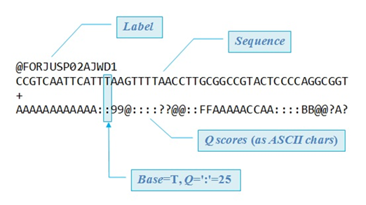
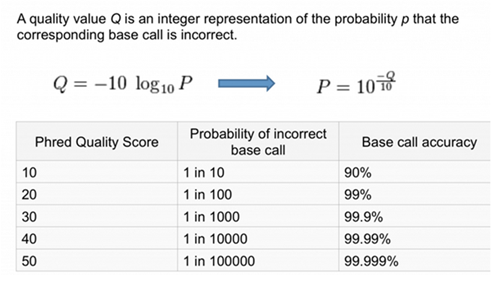
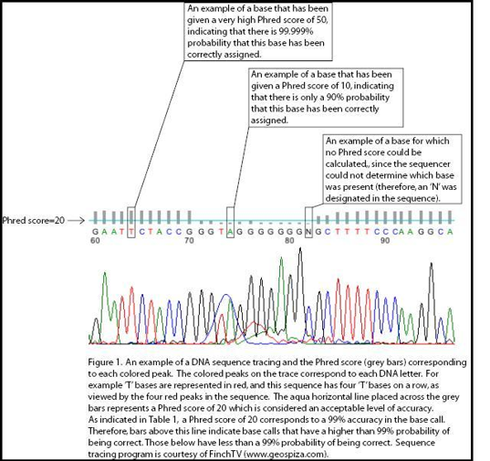
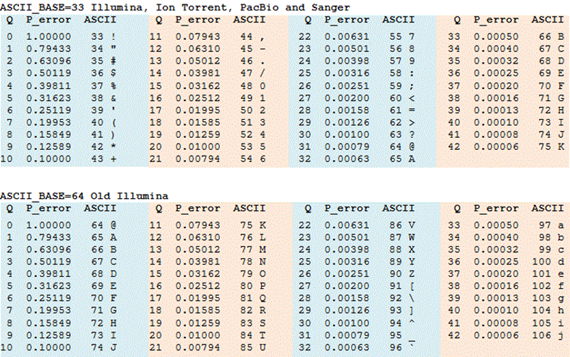
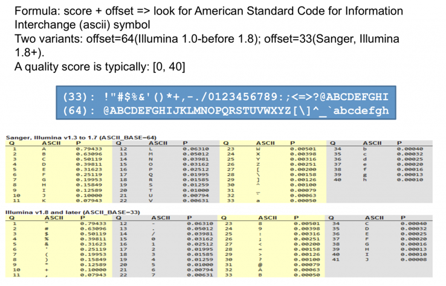

Phred
Los distintos gráficos y tablas relacionados con los formatos FASTQ muestran cómo la calidad de las bases generadas por las plataformas de secuenciación se codifica mediante valores Phred (Q), transformados en caracteres ASCII según un offset que puede ser 33 (Sanger, Illumina moderna, Ion Torrent, PacBio) o 64 (Illumina antigua). Estos Q-scores indican la probabilidad de error en la llamada de cada base y se reflejan en el archivo FASTQ como una línea de caracteres alineada con la secuencia de nucleótidos. Las tablas permiten comparar cómo un mismo valor de calidad se representa de forma distinta dependiendo de la codificación usada, mientras que los cromatogramas muestran visualmente cómo se generan esas bases y por qué su calidad varía. En conjunto, todas estas representaciones ayudan a comprender cómo se produce, evalúa y registra la fiabilidad de cada base en los datos de secuenciación.
Interpretación de los valores de calidad
Un archivo FASTQ almacena cada lectura de secuenciación en cuatro líneas: una etiqueta que identifica el read, la secuencia de bases obtenida por la máquina, un separador y una línea final que contiene los valores de calidad. Estos valores no se guardan como números, sino como caracteres ASCII que codifican los Q-scores, una medida logarítmica de la probabilidad de error en cada base. Cada carácter de la línea de calidad corresponde exactamente a una base de la secuencia, permitiendo evaluar la fiabilidad de cada posición. Cuanto mayor es el valor Q, mayor es la confianza en que esa base fue llamada correctamente durante el proceso de secuenciación.

Interpretación de los valores de calidad
Interpretación de los valores de calidad
El valor de calidad Phred (Q) indica cuánta confianza tenemos en que una base ha sido identificada correctamente durante la secuenciación. A medida que el Q-score aumenta, la probabilidad de error disminuye de forma exponencial: un Q de 10 implica que la base puede ser incorrecta 1 de cada 10 veces, mientras que un Q de 30 reduce ese riesgo a 1 de cada 1000. La tabla muestra cómo valores más altos, como 40 o 50, representan precisiones casi perfectas, con errores extremadamente raros. En esencia, un Q-score más alto significa una llamada de base mucho más fiable.

Relación entre el Phred Quality Score (Q) y la probabilidad de error (P)
Interpretación de los valores de calidad
La imagen muestra un cromatograma de secuenciación tradicional (Sanger) junto con los valores de calidad Phred asignados a cada base. Los picos de colores representan señales para A, C, G y T, y los valores Q (en gris) indican la confianza en cada llamada: un Q=50 refleja una precisión altísima, mientras que un Q=10 indica solo un 90 % de fiabilidad. En zonas donde los picos se solapan o son débiles, el software no puede determinar la base y asigna una N, sin valor de calidad. Esta combinación de señales y Q-scores permite evaluar visualmente qué partes de la secuencia son fiables y cuáles podrían contener errores.

Valores de calidad asignados a cada base de una secuenciación tradicional (Sanger)
Interpretación de los valores de calidad
La tabla de la imagen muestra la correspondencia entre los valores de calidad Phred (Q), la probabilidad de error asociada y el carácter ASCII que se almacena en los archivos FASTQ. Existen dos codificaciones históricas: Phred+33, usada por Illumina actual, Ion Torrent, PacBio y Sanger, donde el valor Q se obtiene restando 33 al código ASCII; y Phred+64, utilizada por versiones antiguas de Illumina, donde el offset es 64. Cada carácter representa un nivel de calidad concreto: cuanto mayor es el valor ASCII (dentro de la codificación adecuada), mayor es el Q-score y menor la probabilidad de error. La tabla permite visualizar cómo cambia el carácter ASCII según el sistema de codificación y por qué es fundamental conocer el offset para interpretar correctamente los valores Q en un archivo FASTQ.

Correspondencia entre valores de calidad Phred (Q), probabilidad de error y caracteres ASCII en archivos FASTQ
Interpretación de los valores de calidad
La imagen explica cómo los valores de calidad Phred (Q) se codifican como caracteres ASCII dentro de un archivo FASTQ. Para convertir un valor Q en su carácter correspondiente, se usa la fórmula ASCII = Q + offset, y existen dos offsets históricos: 64 en las versiones antiguas de Illumina (antes de la 1.8) y 33 en Sanger, Illumina moderna y otras plataformas. La tabla compara ambas codificaciones, mostrando qué carácter representa cada nivel de calidad y la probabilidad de error asociada. Como los Q-scores suelen estar en el rango 0–40, los caracteres resultantes cambian según el offset, lo que hace imprescindible conocer qué codificación usa un FASTQ para interpretar correctamente sus valores de calidad.

Comparación de las dos codificaciones utilizadas para representar los valores de calidad Phred en archivos FASTQ: Phred+33, empleada por Sanger, Illumina 1.8+ y otras plataformas actuales, y Phred+64, utilizada por versiones antiguas de Illumina. La figura muestra cómo cada valor Q se transforma en un carácter ASCII según el offset correspondiente y la probabilidad de error asociada.